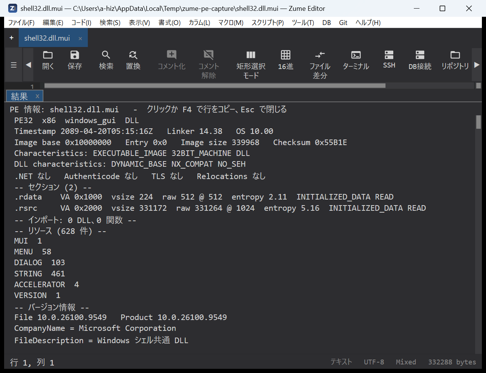
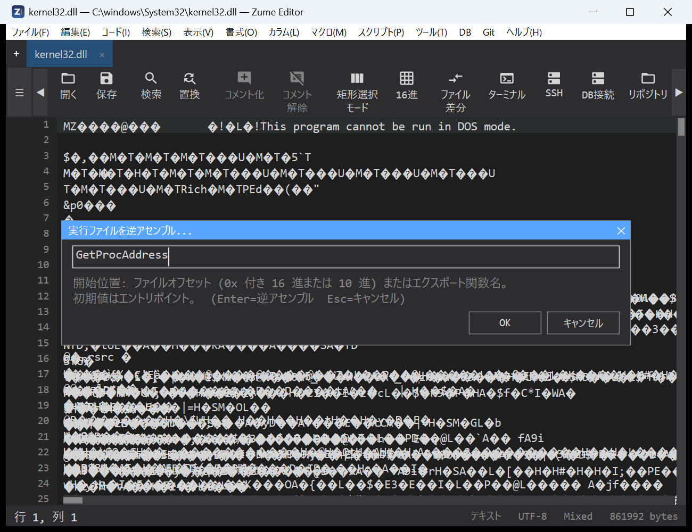
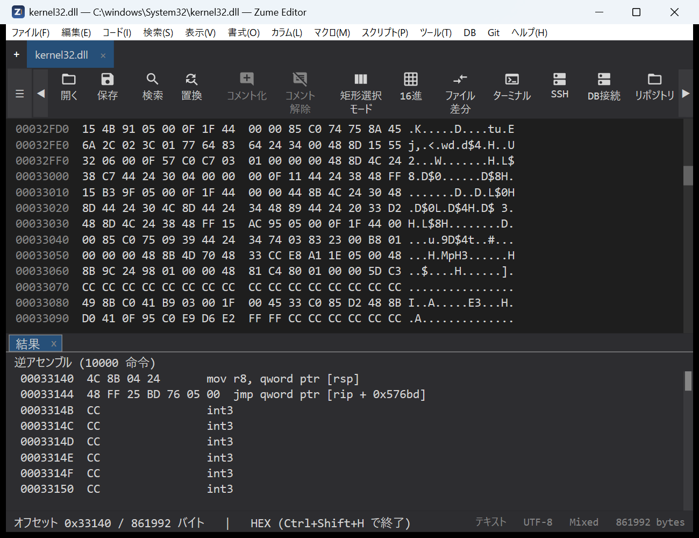
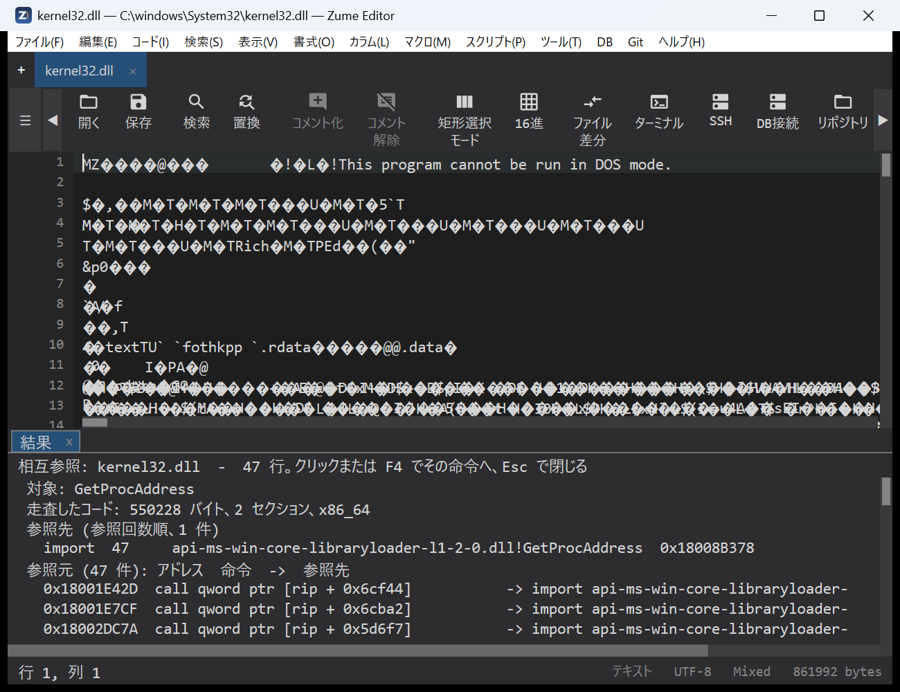
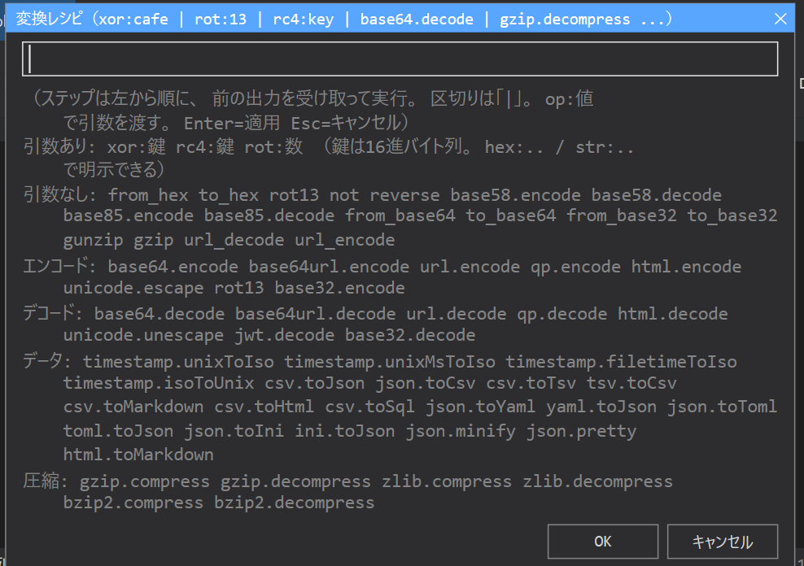

安全分析¶
Zume Editor 提供用于二进制分类、数据转换和签名扫描的工具——适用于逆向工程、CTF
和授权的安全工作。每个工具也可以通过
MCP 服务器 无界面地提供给 AI 智能体使用（identify、entropy、
transform、yara_scan、pe_info、elf_info 和 macho_info 这些工具）。
识别文件¶
Code → Identify File… 会告诉你某个文件是什么，并且对许多文档和图像格式， 还会告诉你创建它的软件是什么——它是 Executable Info 的通用分类伴侣。
它读取文件的内容（magic 签名，而不是扩展名），并在结果面板中列出：
- 格式和描述、MIME type、类别
（图像 / 文档 / 归档 / 可执行文件 / 音频 / 视频 / 字体 / …）、置信度、常见
扩展名，以及当真正的载荷被包装时的容器（例如
.docx就是一个 ZIP 容器）。 - 对于文档或图像，还有 Producer / Creator 行——即写入该文件的应用程序 或设备。
可识别约 50 种格式——图像（PNG、JPEG、GIF、TIFF、WebP、 HEIC/AVIF、BMP、ICO），文档（PDF、RTF、PostScript、OOXML 和 OpenDocument 办公格式、EPUB），归档与压缩（ZIP、7z、RAR、 tar、gzip、xz、zstd、…），媒体（MP4/MOV、WebM/Matroska、WAV、FLAC、OGG、MP3）， 字体、SQLite 数据库、WebAssembly 和 Java class 文件，以及 PE / ELF / Mach-O 可执行文件。基于 ZIP 的文件会被细化为真正的类型（docx / xlsx / pptx / odt / epub / jar / apk）。
“Created by”读取自文件自身的元数据，绝不猜测：
| 格式 | 来源 |
|---|---|
Info 字典的 /Producer 和 /Creator（以及 XMP pdf:Producer / xmp:CreatorTool）；文件的尾部也会被读取，因此大型 PDF 的 producer 仍能被找到 |
|
| JPEG / TIFF | EXIF——Software、Make + Model，以及来自 Exif 子 IFD 的 DateTimeOriginal 和镜头 make / model |
| PNG | Software 文本 chunk |
| OOXML（docx / xlsx / pptx） | docProps/app.xml 的 <Application>（以及来自 core.xml 的作者） |
| OpenDocument（odt / ods / odp） | meta.xml 的 <meta:generator> |
当活动标签页是一个文件时，识别的就是该文件；否则会弹出文件选择器要求选一个。 只读取有界的前缀（对于 PDF，还读取尾部），因此无需加载即可识别巨大的文件。 点击某一行（或 F4）可复制它；Esc 关闭。无法识别的文件会被报告为未知数据， 而不是作出猜测。
同样的识别功能也可通过 MCP
identify 工具提供给 AI 智能体使用（file_info 也会报告它），
并可通过命令行使用 zume-cli identify。
Executable Info（PE / ELF / Mach-O）¶
Code → Executable Info… 会从结构上读取一个可执行文件，并将结果列在结果面板中。 格式会根据文件的 magic 检测：
- PE（Windows EXE / DLL）：各头部和安全标志（ASLR / DEP /
CFG）、每个带有熵值的节、导入的 DLL 和函数、导出，以及功能清单所需的资源——
版本字符串、字符串表、每个对话框的标题和控件、菜单项和清单——
再加上 PDB 路径和追加在最后一个节之后的任何数据。对于
MSVC 链接的二进制文件，它还会读取 Rich header：未公开的
@comp.id构建溯源块，它命名每个编译器 / 链接器 / 汇编器组件、其构建号和对象数量，并带有一个校验和 有效性标志（一个强有力的“这是哪条工具链构建的”指纹）。 - ELF（Linux 可执行文件和共享对象）：type、machine、entry、 解释器、带有熵值的 segment 和 section、dynamic section（所需的 库、soname、rpath / runpath）、带版本的导入和导出符号、 未剥离时的本地符号、GNU build id，以及该二进制文件所携带的 加固特性（PIE、NX stack、RELRO、stack canary、FORTIFY）。
- Mach-O（macOS / iOS 映像，包括 fat / universal 二进制文件，其 slice 会被列出并读取第一个）：CPU、file type、header 标志、 每个 load command、带有熵值的 segment 和 section、带版本的链接 dylib、 rpath、UUID、platform / minimum OS / SDK、entry point、 导入和导出符号，以及该映像是否带签名或被加密。
当活动标签页本身就是这样一个文件时（一个在十六进制视图中打开的二进制文件）， 读取的就是该文件；否则会弹出文件选择器要求选一个。文件在工作线程上读取， 因此大型二进制文件不会阻塞编辑器（读取前 256 MiB；更大的文件会在一个警告行中 说明）。点击某一行（或按 F4）可将该行复制到剪贴板；Esc 关闭面板。
命名代码的行则会跳转到反汇编：entry-point 行、 导出的函数，以及可执行的段或节。点击其中之一会 在该文件偏移处以十六进制视图打开文件，并用该文件声明的架构（x64、 x86、ARM64、ARM / Thumb）在该处运行 Hex → Disassemble，于是反汇编面板会从 该偏移处取代报告；十六进制视图保持打开以供浏览。

学习模式：字段说明
在 Tools → Settings… 中打开 Explanations（explain_annotations
设置，默认关闭），Executable Info 报告便会在对分类重要的字段下方加上一条简短的
“这是什么意思”注释——entry
point、subsystem、节熵值、imports/exports、overlay、Rich
header（构建溯源），以及存在的每一个加固位（ASLR / DEP / CFG，
ELF PIE / NX / RELRO / stack canary / FORTIFY，Mach-O signature /
加密 / chained fixups）。它旨在
用于学习；专家会将其关闭以获得整洁的报告。
反汇编可执行文件¶
Code → Disassemble Executable… 直接进入列表。当活动标签页的文件是
PE / ELF / Mach-O 时它会取用该文件（否则会弹出文件选择器
要求选一个），读取各头部，并打开一个小对话框询问从何处开始，
预填 entry point 的文件偏移。输入一个文件偏移（0x2D5F0
或十进制）或一个导出函数的名称（GetProcAddress；Mach-O
名称无论带不带前导 _ 都可以），然后按 Enter：文件
会在该偏移处以十六进制视图打开，反汇编面板从那里列出指令，
按该文件声明的架构解码。一个不是导出项的
名称，或一个超出文件范围的偏移，都会被拒绝并给出
提示。同一个解码器就是 MCP 工具 disassemble。点击进入
结果面板后，键盘即可在其中移动：↑ / ↓、PageUp / PageDown、
Home / End 移动高亮行，Enter 激活它（十六进制
光标移动到该指令），Esc 关闭面板。


交叉引用¶
Code → Cross-References… 回答“哪些代码使用了这个”：它取用
活动标签页的可执行文件（或要求选一个），为目标打开一个小对话框
——一个导入项或符号名称（CreateFileW、KERNEL32.dll!CreateFileW）、
一个字符串片段、一个 0x 地址，或留空以列出每一处引用——并
扫描每一个可执行节。结果面板按引用次数列出各目标
（import / symbol / PLT 或 stub / string / code / data），然后
列出每一条引用指令及其地址；点击某一条引用
行（或按 F4）会在该指令处以十六进制视图打开文件
并从那里开始反汇编。同一次扫描就是 MCP 工具 xrefs。

同样的读取器就是 MCP 工具 pe_info、elf_info 和 macho_info
（见 MCP）。它们从不加载或运行文件；disassemble
只解码字节，别无其他。只分析其许可证允许分析的二进制文件。
控制流图¶
Code → Control-Flow Graph… 取用活动标签页的可执行文件（或要求选
一个），并将其 entry function 绘制成基本块——一段只能从其第一条指令进入、
只能从其最后一条指令离开的直线指令流。结果
面板列出每个块及其地址、指令数、标志（entry /
returns / computed jump）以及控制流接下来可到达的块（-> B1, B2，
被采取的分支在前），随后是该块的指令，于是该函数的
分支和循环便按顺序铺陈出来。MCP 工具 cfg 为任意函数（通过 symbol
或 address）构建相同的图，这是绘制除 entry 之外的函数的方法。静态且启发式；
不运行任何东西。
反编译器工具——安装¶
反编译是可选的，并使用你自行安装的工具。Zume 不捆绑 其中任何一个，不下载任何东西，只有在你指向某个工具时才启动它。 只安装你需要的那些：
| 工具 | 反编译 | 安装 | 启用 |
|---|---|---|---|
| JDK（Temurin / OpenJDK） | Java 和 Ghidra 的前置条件 | adoptium.net — Java 17+ | 设置 JAVA_HOME，或将 java / javap 放到 PATH 上 |
| Ghidra | 原生 PE / ELF / Mach-O → C | ghidra-sre.org — 解压到任意位置（需要 JDK） | 编辑器：Tools → Settings → Decompiler (Ghidra)；MCP：ZUME_GHIDRA_HOME = 安装目录 |
| ilspycmd（ILSpy） | .NET 程序集 → C# / IL | dotnet tool install -g ilspycmd（需要 .NET 运行时） |
编辑器：Tools → Settings → Decompiler (.NET / ILSpy)；MCP：ZUME_ILSPY = ilspycmd 路径，或设为 1 以在 PATH 上查找 |
| CFR | Java .class / .jar → Java 源码 |
从 Maven Central 下载 https://repo1.maven.org/maven2/org/benf/cfr/0.152/cfr-0.152.jar（单个 jar；需要 JDK） | MCP：ZUME_CFR = jar 路径 |
备注：
- javap（JVM 字节码）和 jar（class 列表）随 JDK 一起提供，因此 Java class 列表和字节码仅凭 JDK 即可使用——CFR 增加了 Java 源码。
ZUME_*变量从 MCP 服务器的环境中读取。对于 Claude Code CLI，那就是~/.claude.json中zume条目的env块； 编辑后请重启客户端。可选的结果缓存：ZUME_GHIDRA_CACHE、ZUME_ILSPY_CACHE、ZUME_CFR_CACHE。- Ghidra 和 ilspycmd 也可以从编辑器的 Settings 对话框进行配置
（它们驱动编辑器自身的 Code → Decompile… 命令）；
ZUME_*变量驱动从 Claude Code 使用的 MCP 工具。两者相互独立。 - 每个工具都静态读取目标——绝不运行它。 许可证各不相同： Ghidra 是 Apache-2.0，ilspycmd 和 CFR 是 MIT；它们都不由 Zume 重新分发。 反编译器的输出是衍生作品——在复用任何内容之前，请参阅下面的各工具小节 及其许可证 / clean-room 警告。
反编译（Ghidra）¶
Zume 不包含反编译器，但它可以驱动一个你已经拥有的： Code → Decompile (Ghidra)… 使用本地 Ghidra 安装 将一个函数的机器码转回类 C 的伪代码。 它是可选的且默认关闭——在你把 Zume 指向 Ghidra 之前，该菜单项都是灰色的。
启用它。 打开 Tools → Settings…，找到 Decompiler (Ghidra)
小节，点击 Ghidra install: 行并选择你的 Ghidra 目录（
包含 support/analyzeHeadless 的那个文件夹）。Ghidra 需要一个 Java 17+
运行时；Zume 会在你的 PATH 或 JAVA_HOME 上找到一个，因此通常无需额外设置。
清除该路径会再次禁用此功能。
使用它。 在活动标签页为一个可执行文件时（或通过文件选择器），
选择 Code → Decompile (Ghidra)…，然后输入一个函数——一个地址
（0x180001020，例如 functions 或 xrefs 报告的某个地址）、一个名称，或留空
以反编译整个文件（有上限）。Zume 会在后台线程上无界面地运行 Ghidra
（首次可能需要几分钟），并在一个只读标签页中打开反编译出的 C。结果会
按文件的大小、修改
时间和你的请求进行缓存，因此再次反编译同一个未更改的函数是
即时的。
同一个反编译器就是 MCP 工具 decompile，除非
ZUME_GHIDRA_HOME 环境变量指向一个 Ghidra 安装，否则它处于关闭状态（设置
ZUME_GHIDRA_CACHE 以选择其缓存目录）。
许可证与 clean-room
Ghidra 静态分析二进制文件——它不运行它——但 反编译器的输出是原作的衍生作品，并且可能与其 源码相似。只反编译其许可证允许的二进制文件，并且如果你要 重新实现某个功能，请从行为规范出发，而不是从 输出的 C 出发。
反编译 .NET（ILSpy）¶
一个 .NET 程序集的真实代码是其元数据中的 CIL，因此 Ghidra 无法有效地
反编译它。对于托管二进制文件，Zume 改为驱动
ILSpy 的命令行工具 ilspycmd：
Code → Decompile (.NET / ILSpy)… 将一个类型转回 C#。像
Ghidra 集成一样，它是可选的且默认关闭——在你把 Zume 指向 ilspycmd
之前，该菜单项都是灰色的。
安装 ilspycmd。 它是一个 .NET 全局工具（不需要 ILSpy 桌面应用）：
dotnet tool install -g ilspycmd
这需要 .NET 运行时，并会安装 ilspycmd（通常是
%USERPROFILE%\.dotnet\tools\ilspycmd.exe），同时将其放到你的 PATH 上。
启用它。 打开 Tools → Settings…，找到 Decompiler (.NET / ILSpy)
小节，点击 ilspycmd: 行并选择 ilspycmd.exe 文件。
可选的 IL cache: 行用于选择结果的缓存位置（留空则使用
默认位置；首次使用时会为你创建该文件夹）。清除
该路径会再次禁用此功能。
使用它。 在活动标签页为一个 .NET 程序集时（或通过文件选择器），
选择 Code → Decompile (.NET / ILSpy)… 并输入一个完全限定的类型
名称（例如 Acme.Core.Engine）；留空则先将该程序集的类型列入
一个标签页，然后用其中之一重新运行。Zume 会在后台
线程上运行 ilspycmd，并在一个只读标签页中打开反编译出的 C#。结果会
像 Ghidra 的那样被缓存。
同一个反编译器也可供 MCP 客户端使用，即 il_types（类型
清单，functions 的托管对应物）和 il_decompile（将一个类型
转为 C#，或将整个程序集作为一个项目），除非设置了 ZUME_ILSPY
环境变量——ilspycmd 的路径，或设为 1 以在
PATH 上查找（ZUME_ILSPY_CACHE 选择缓存目录），否则它处于关闭状态。decompile 工具
会自动将托管目标路由到此处。
许可证与 clean-room
反编译出的 C# 非常接近原始源码（IL 保留了名称 和结构），因此许可证 / clean-room 的注意事项比 对于原生代码更为重要：只反编译其许可证允许的程序集，并且 从行为规范出发重新实现，而不是从输出的 C# 出发。
反编译 Java（javap + CFR）¶
Java .class / .jar 文件是 JVM 字节码——Ghidra 和 ILSpy 都不是
合适的工具。Zume 改为使用 JDK 的 javap（字节码）和一个用户提供的 CFR
反编译器（Java 源码），通过 MCP 工具 java_types（列出一个
jar 的类）和 java_decompile（将一个类转为 Java 源码、javap -c
字节码，或将整个 jar 转为一棵源码树）。它是需主动启用的：
- javap / jar 来自 JDK，通过
JAVA_HOME或PATH查找——即 Ghidra 集成所需的同一个 JDK。字节码和 class 列表仅凭 JDK 即可使用。 - CFR（Java 源码反编译）是你提供的单个 jar；在（MCP 服务器上）设置
ZUME_CFR环境变量指向其路径。ZUME_CFR_CACHE选择缓存目录。CFR 采用 MIT 许可，并且像 Ghidra 和 ilspycmd 一样， 不被捆绑、下载或链接——Zume 只启动你安装的工具。
安装 CFR。 它是一个单独的 jar——无需安装任何东西，只需 从 Maven Central（或 CFR releases）下载一次：
https://repo1.maven.org/maven2/org/benf/cfr/0.152/cfr-0.152.jar
将它保存到任意位置，例如 C:\Users\<you>\zume-app\cfr\cfr-0.152.jar。还必须
存在一个 JDK，用于 java（运行 CFR）和 javap（字节码）——即
Ghidra 集成使用的同一个 JDK。
启用它。 在 MCP 服务器的环境上设置这些（对于 CLI，
即 ~/.claude.json 中 zume 条目的 env 块），然后重启客户端：
"env": {
"JAVA_HOME": "C:\\Program Files\\Eclipse Adoptium\\jdk-25...-hotspot",
"ZUME_CFR": "C:\\Users\\<you>\\zume-app\\cfr\\cfr-0.152.jar",
"ZUME_CFR_CACHE": "C:\\Users\\<you>\\zume-app\\cfr-cache"
}
如果 java / javap 已在 PATH 上，则可以省略 JAVA_HOME；class
列表和字节码（javap）此时仅凭 JDK 即可使用，而 ZUME_CFR 增加了
Java 源码输出（CFR）。非 ASCII 字符串字面量会以 \uXXXX
转义形式返回，这是 CFR 正常、无损的输出。
这些工具读取 class 文件——它们从不运行它们。
许可证与 clean-room
反编译出的 Java 是原作的衍生作品。只反编译其 许可证 / EULA 允许逆向工程、且你有权分析的 软件，并从行为规范出发重新实现，而不是复制 输出的 Java。你以此方式构建的任何东西都由你自己负责。
接口恢复（Objective-C / Swift）¶
Code → Objective-C / Swift Interface… 恢复一个 macOS / iOS Mach-O
在其 Objective-C 和 Swift 运行时元数据中携带的类接口——
无需反编译器。它读取 __objc_* 和 __swift5_* 节并
将一个头文件写入 <app data>/interfaces/<name>.h，以只读方式打开，列出：
- Objective-C 类及其父类和采用的协议、每一个
实例方法和类方法（带有 selector 的
-/+，以及元数据携带时的参数和 返回类型）、实例变量、带有属性特性的 声明的属性，以及扩展一个类的分类（category）。 - 从
__swift5_types/__swift5_protos恢复的 Swift 类型，以及 符号表中被反修饰（demangle）为可读签名的 Swift 符号 （Module.Type.method(label:) async throws -> T）。反修饰器是 fail-closed 的：一个符号要么被正确反修饰，要么保留其原始的_$s…形式——绝不会猜错。
当活动标签页是这样一个文件时读取的就是它；否则会弹出文件选择器。
一个 fat / universal 二进制文件会解析为被读取的那个 slice，而将命令
指向一个 .app 或 .framework 包则会解析为其中的 Mach-O。每个
方法行都带有其实现的地址，因此激活它（点击，
或 F4）会跳转到反汇编中该方法的函数体，就像 Executable
Info 的代码行一样。同一个引擎会在交叉引用中以及在
MCP functions 工具中命名调用点——一个 objc_msgSend 点会显示它所
发送的 @selector(...)，而一个类引用会显示该类。
这只读取 Objective-C 和 Swift 为其自身运行时留在二进制文件中的 元数据，而不是方法体；它从不运行目标。它在 macOS / iOS 二进制文件上最为有用，因为那里这类元数据最为丰富。
YARA 扫描¶
Code → YARA Scan… 使用一组 YARA 规则扫描活动文档。
该对话框要求提供一个 YARA 规则文件的路径（.yar / .yara）——而不是
规则本身。你先把规则写进一个文件，然后将对话框
指向它。
- 创建一个规则文件（见下面的示例）并保存，例如
C:\rules\malware.yar或~/rules/strings.yara。 - 打开你想扫描的文档，然后运行 Code → YARA Scan…（它 也在命令面板中）。
- 输入规则文件的完整路径并按 Enter。
- 匹配项会在结果面板中列为
rule $string line N @ offset。 点击某一行（或按 F4）跳转到该行。
此命令在普通的文本 / 代码标签页上工作（不适用于大文件、十六进制或 Git 标签页）。
示例规则文件¶
rule suspicious_strings
{
strings:
$a = "cmd.exe /c" nocase
$b = "powershell" nocase wide
$mz = { 4D 5A ?? 00 } // PE header (?? is a wildcard byte)
$url = /https?:\/\/[a-z0-9.\-]+/ nocase
condition:
$mz and (2 of ($a, $b, $url))
}
支持哪些内容¶
YARA 语言的一个实用子集：
- 字符串——文本（
"..."）、十六进制（{ 4D 5A ?? 00 }，带有??字节和?半字节通配符）以及正则表达式（/regex/）。 - 字符串修饰符——
nocase、wide、ascii、fullword。 - 条件——一个字符串名称（
$a）、all of them/any of them/N of them、N of ($a*)、#a <op> N（匹配次数）、$a at N（在某个偏移处 匹配）、filesize <op> N、and/or/not、括号，以及//…/* … */注释。
它不是完整的 libyara 引擎：不支持模块（pe、hash、math、…）、十六进制
跳转（[4-6]）和交替（( A | B )），使用它们的规则会
报告一个有类型的错误而不是进行匹配。
内联规则 / 批量扫描
要直接粘贴规则，或一次性扫描整个文件或目录，请
通过 MCP 使用 yara_scan 工具——它接受以文本形式提供的规则，
并以一个文件、一个目录或内联字节作为目标。
转换配方¶
Code → Apply Convert Recipe… 对选区（或整个文档）从左到右
运行一条由转换组成的流水线。各步骤之间用 |
（或空格 / 逗号）分隔；步骤的参数跟在冒号之后。例如：
from_base64 | xor:cafe | gunzip
打开的对话框在其单一的文本字段中接受配方；字段下方的提示 会列出引擎接受的每一个步骤，按下面表格中的分组排列，这样 你就不必记住它们了。输入各步骤，然后按 Enter（或 OK）应用；Esc 取消。

每一个步骤¶
| 分组 | 步骤 |
|---|---|
| 带参数 | xor:<key>（用重复的密钥对每个字节做 XOR）、rc4:<key>（RC4 加密 / 解密）、rot:<n>（凯撒移位 n） |
| 无参数 | from_hex、to_hex、rot13、not（翻转每一位）、reverse（反转字节）、base58.encode / base58.decode、base85.encode / base85.decode |
| 简称 | from_base64 = base64.decode、to_base64 = base64.encode、from_base32 / to_base32、gunzip = gzip.decompress、gzip = gzip.compress、url_decode / url_encode |
| 编码 | base64.encode、base64url.encode、url.encode、qp.encode、html.encode、unicode.escape、rot13、base32.encode |
| 解码 | base64.decode、base64url.decode、url.decode、qp.decode、html.decode、unicode.unescape、jwt.decode、base32.decode |
| 数据 | timestamp.unixToIso、timestamp.unixMsToIso、timestamp.filetimeToIso、timestamp.isoToUnix、csv.toJson、json.toCsv、csv.toTsv、tsv.toCsv、csv.toMarkdown、csv.toHtml、csv.toSql、json.toYaml、yaml.toJson、json.toToml、toml.toJson、json.toIni、ini.toJson、json.minify、json.pretty、html.toMarkdown |
| 压缩 | gzip.compress、gzip.decompress、zlib.compress、zlib.decompress、bzip2.compress、bzip2.decompress |
编码 / 解码 / 数据 / 压缩各行是
文件转换 的转换器；任何转换器 id 都可作为一个步骤使用。密钥参数
（xor: / rc4:）在看起来像十六进制时（cafe、
deadbeef）会被读为十六进制字节，否则读为文本；写成 hex:cafe 或 str:cafe
以明确指定是哪一种。
一个恰好看起来像十六进制的文本密钥
因为一个裸密钥在全是十六进制数字时会被读为十六进制，所以一个文本
密码，例如 cafe、decade 或 7a756d65，会被当作字节，而不是
字母——因此 rc4:zume 使用文本密钥 zume（有非十六进制字母），
但 rc4:cafe 不会使用文本 cafe。消除歧义：对一个文本 / ASCII 密钥写
rc4:str:<key>（例如 rc4:str:zume），对一个字节密钥写
rc4:hex:<bytes>——或仅用裸十六进制（例如
rc4:7a756d65，zume 的十六进制）。这两种形式给出不同的密钥流，
因此要匹配二进制文件中的一个密钥校验（它使用原始密钥字节）就意味着
使用这些确切字节的十六进制形式。
让它报错而不是猜测（严格模式）
要彻底禁止裸形式，请在 Tools ▸
Settings… 中、Transform recipe keys 下打开严格模式（strict_transform_keys
设置）。那样每一个 xor:/rc4: 密钥都
必须带有 hex: 或 str:；一个裸密钥会被拒绝，配方不会被
应用。在严格模式关闭时（默认），一个看起来像十六进制的裸密钥
仍会被应用，但状态行会发出警告并指出 str:/hex: 形式。
transform MCP 工具与此一致：它的响应始终携带一个
warnings 列表，用以标记这样的裸密钥，而一个 strict: true 参数会
拒绝它。
示例¶
选中编码后的文本（或在整个文档上运行它）并应用：
| 配方 | 作用 |
|---|---|
from_base64 |
解码一个 Base64 blob |
from_base64 \| gunzip |
解码 Base64，然后对结果做 gzip 解压 |
from_hex \| xor:5a |
十六进制解码，然后用 0x5A 对每个字节做 XOR |
from_hex \| xor:hex:deadbeef |
十六进制解码，然后用重复密钥 DE AD BE EF 做 XOR |
from_base64 \| rc4:str:s3cret |
Base64 解码，然后用文本密钥 s3cret 做 RC4 解密 |
from_hex \| rc4:7a756d65 |
十六进制解码，然后用字节密钥 7A 75 6D 65（zume 的十六进制）做 RC4 |
rot13 |
ROT13；rot:3 是移位 3 的凯撒密码 |
base58.decode |
解码一个 Base58 字符串（例如一个钱包地址 / 密钥） |
jwt.decode |
将一个 JWT 展开为其解码后的 header / payload JSON |
from_base64 \| xor:cafe \| from_base64 |
剥开一个被双重编码、XOR 包裹的载荷 |
结果会作为单个撤销步骤替换选区（或文档），因此
Ctrl+Z 会还原整条配方。如果某个步骤失败（例如输入不是有效的
Base64），编辑器会显示哪个步骤失败，并保持文本不变。
熵¶
在 十六进制 / 二进制编辑器 中，熵图和熵概览 条按区域显示文件的 Shannon 熵（0–8 bits/byte），使得加壳 或加密的区域凸显出来。
Code → Entropy Map… 在结果面板中为任意文件列出同样的信息：
总体熵、横跨整个文件的块迷你折线图，以及每个窗口一行
（偏移、值、字形）。接近 8 bits/byte 的值暗示数据被压缩或
加密——通常是一个加壳程序。MCP 工具 entropy 返回相同的序列。
扫描密钥¶
Code → Scan for Secrets 列出文档中可能的密钥（API 密钥、令牌、私钥、 凭据），每一项都带其所在的行；点击某一行即可跳转到它。 Edit → Redact Selection 遮蔽所选文本。
外部安全分析器¶
Zume Editor 可以运行一个外部渗透测试 / 分析工具并显示 其发现结果，这样你就能在它们所指向的文件旁边对结果进行分类。 编辑器不附带任何攻击代码：它只启动你安装并配置的工具， 并解析其结构化输出。
仅限授权使用
只对你获得明确授权测试的系统使用此功能（ 你自己的系统、一次获得许可的客户项目，或一个 CTF / 实验环境）。该 外部工具——而非 Zume Editor——对范围、授权 和日志记录负责。对你不拥有或无权测试的系统运行安全工具 可能是违法的。
配置一个分析器。 在 settings.json 中，将 analyzer_tools 设为一个或
多个 name = command 行。命令可以使用两个占位符：
{target}——你运行它时输入的范围字符串（一个主机、URL、CIDR…）。{out}——编辑器提供的一个路径；你的工具把它的 JSON 结果写到那里。
{
"analyzer_tools": "recon = my-recon --scope \"{target}\" --json \"{out}\""
}
或者无需手工编辑 JSON 即可配置它们：Tools → Settings… 中有一个
Security analyzers 小节，其中每个分析器都是一个可编辑的
name = command 行（Ghidra / ILSpy 的路径在那里也是可编辑的输入框）。
一个较长的值会在一行内滚动而不换行，而 Clear 会在擦除前
请求确认。你的编辑会被保存回 settings.json。
运行它。 Tools → Run Security Analyzer…（在配置了一个分析器之前它处于禁用
状态）会列出它们；选一个并输入授权的范围——或者，
当活动标签页是一个本地文件时，对该文件运行分析器（它的路径
成为 {target}，并且编辑器会记录该文件的 SHA-256，使得发现结果
与确切的字节绑定）。该工具在后台线程上运行，其
发现结果在结果面板中按严重程度分组出现，并带有彩色
徽章——每个发现一行（严重程度、kind、target、title、detail）。一个
指向证据文件的发现会在你点击该行时打开它（如果该发现
给出了行号，则在该行处）；其他任何行都会复制其文本。
结果格式。 你的工具必须向 {out} 写入一个小的 JSON 文档：
{
"tool": "my-recon", "scope": "192.0.2.0/24",
"findings": [
{ "kind": "service", "severity": "low", "target": "192.0.2.10:22",
"title": "OpenSSH 9.6", "detail": "banner", "evidence_path": "", "address": "" }
],
"warnings": []
}
未知字段会被忽略，缺失字段则取默认值，因此这种格式很容易
生成。{out} 文件是事实来源，因此一个以非零退出码退出但
仍写入了结果的工具会被正常读取。
从一个 AI 智能体。 MCP 服务器 将同样的功能暴露为
analyze_run 工具。除非 ZUME_ANALYZER_TOOLS 环境
变量以同样的 name = command 形式配置了一个分析器，否则它处于关闭状态——每行一个条目，
JSON 中每个换行写作 \n。在 MCP 服务器的
env 块中设置它，例如：
"ZUME_ANALYZER_TOOLS": "web = sanctum --web \"{target}\" --crawl --active --i-am-authorized --json \"{out}\"\nrecon = sanctum --scope \"{target}\" --json \"{out}\" --i-am-authorized\nfile = sanctum --file \"{target}\" --json \"{out}\""
完整的 env 块和其他
可选工具变量请参阅 环境变量。
配套工具：sanctum¶
sanctum 是一个独立、
可选、开源的配套工具，它正好输出这种结果格式，因此
它可以无需任何胶水代码地接入 analyzer_tools。它是限授权范围且
非破坏性的——它绝不利用漏洞、提取数据、绕过身份验证或
造成拒绝服务——而且除非你传入
--i-am-authorized，否则每一次主动运行都会被拒绝。它提供三种模式：
- Recon（
--scope）：TCP connect 主机发现和端口枚举， 并带 banner 抓取——没有原始套接字、没有 SYN 扫描、没有漏洞利用。 - 离线文件分析（
--file，无网络）：文件类型、CRC32 / MD5 / SHA-1 / SHA-256、熵和字符串，以及一个.pcap/.pcapng摘要 （端点、服务、明文凭据、TLS / QUIC SNI）。 - Web 诊断（
--web，非破坏性）：缺失 / 薄弱的安全 头、cookie 标志、软件信息泄露和传输安全态势；一个可选的 同源爬取；仅检测存在性的主动检查（反射型 XSS、SQL 和 OS 命令注入、路径遍历、CRLF / 响应头注入、开放 重定向、方法和敏感路径枚举）；有界的、非破坏性的 模糊测试；以及使用你提供的会话进行已认证扫描。它 在不将弱点武器化的情况下确认其存在——一次基于时间的检查通过一个测得的 延迟证明某个缺陷存在；它从不读取数据。
将一个或多个分析器指向它。在 Tools → Settings… 中（Security
analyzers 小节），每行添加一个 name = command：
web = sanctum --web "{target}" --crawl --active --i-am-authorized --json "{out}"
recon = sanctum --scope "{target}" --json "{out}" --i-am-authorized
file = sanctum --file "{target}" --json "{out}"
同样的内容直接写在 settings.json 中（每个换行变成 \n）：
{
"analyzer_tools": "web = sanctum --web \"{target}\" --crawl --active --i-am-authorized --json \"{out}\"\nrecon = sanctum --scope \"{target}\" --json \"{out}\" --i-am-authorized\nfile = sanctum --file \"{target}\" --json \"{out}\""
}
当 sanctum 在你的 PATH 上时使用裸名称 sanctum，否则使用可执行文件的
完整路径（例如 C:\Tools\sanctum\sanctum.exe）。file 分析器是被动的
（它读取一个本地文件且不发送任何内容），因此不需要授权标志；
recon 和 web 会发出主动请求，若无
--i-am-authorized 则会被拒绝。完整的选项
集及其安全设计请参阅
sanctum README。